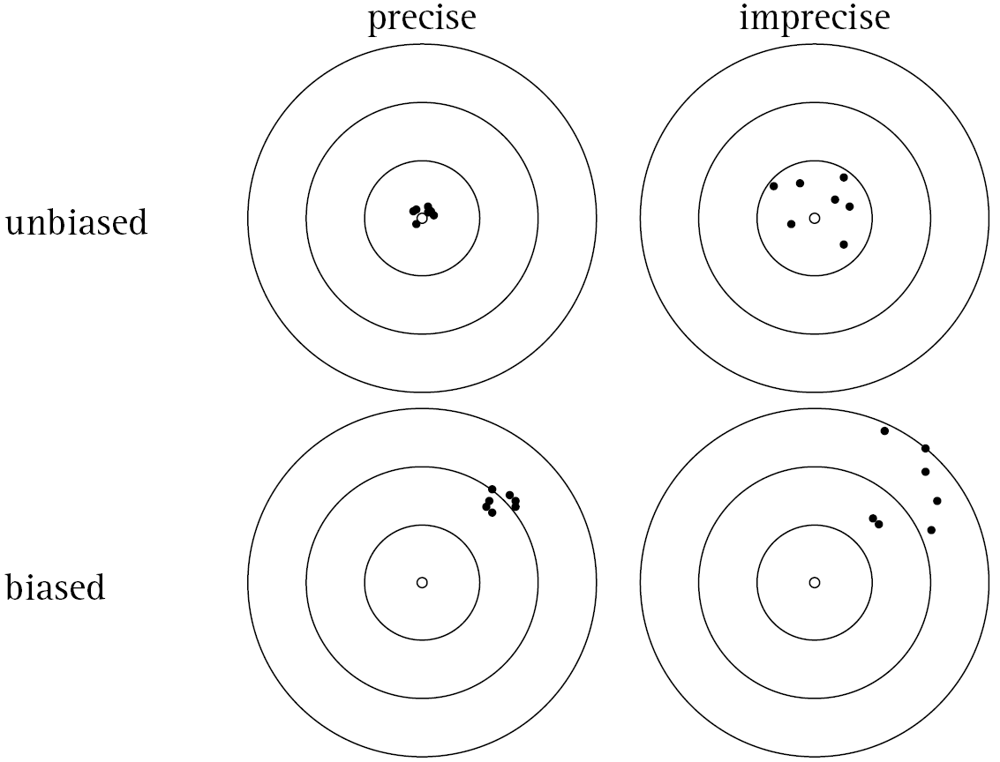

Student Questions - Chapters 3 & 4
Student Questions:
What is the difference between unbiased and random?
Random sampling is an unbiased sampling method. Meaning, we will hit the right target, on average.

For example, random sampling fixes the Gettysburg address problem, and would give an unbiased estimate of the population mean.
BUT, there are lots of other types of bias:
non-response bias (people who don’t opt into the study)
attrition bias (people drop out of study)
bias of estimators (formulas we use)
coverage bias (we only have a list of a subset of units in our population)
etc
Can large samples with unbiased methods still result in biased results?
- Yes, maybe random sampling is used, and unbiased estimators (formulas) are used, but results can still suffer from a different type of bias (e.g. coverage bias)
Can random assignment still have some sort of bias?
Random sampling: takes care of sampling bias, and allows us to generalize to the population from which we drew our sample
Random assignment: takes care of confounding variables, and allows us to make causal claims
What’s the easiest way to find standard deviation?
- Using R :) never have to calculate it by hand. R has a built in function
sd()that computes it for us
- Using R :) never have to calculate it by hand. R has a built in function
Chapter 5 Review
| Col1 | Col2 | Col3 | Col4 | Col5 |
|---|---|---|---|---|